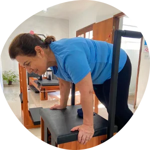
Consciência corporal
Perceber o seu corpo e a sua postura, entender como ele funciona e se movimenta, e controlar cada movimento é o ponto de partida para um corpo saudável.
Centenas de pessoas tratadas, com menos dores e mais felizes. Nós acreditamos que podemos mudar a sua vida.
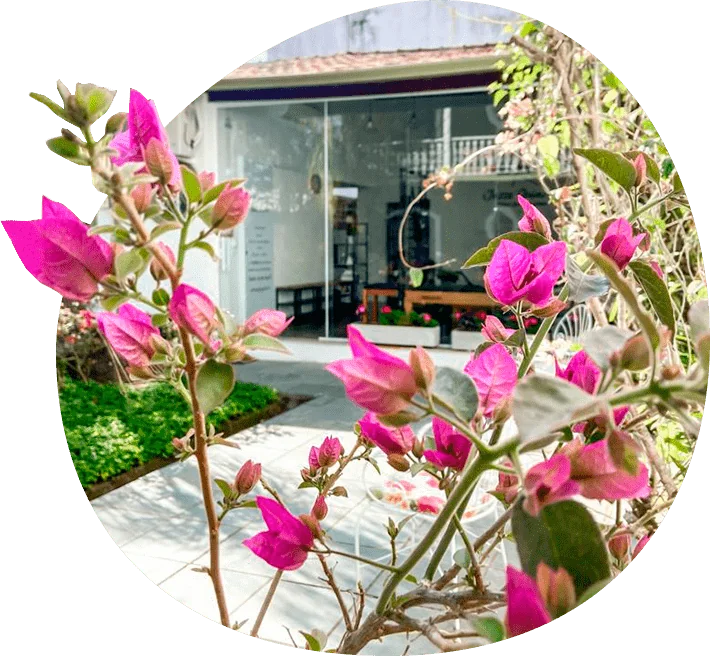
Você acaba de encontrar o lugar ideal para cuidar da sua saúde. Um ambiente aconchegante em contato com a natureza para você se exercitar com qualidade e ter um atendimento personalizado para se livrar das dores no corpo!
Unindo as técnicas contemporâneas do pilates com uma minuciosa avaliação da biomecânica, conseguimos corrigir falhas nos movimentos que sobrecarregam suas articulações, direcionando o melhor exercício para reequilibrar o seu corpo. Usamos o método Pilates como uma estratégia inteligente para reorganizar o seu corpo e fazer a diferença na sua vida.
Quero agendar um horárioSe você quer aprender a se exercitar de forma eficiente, ou sofre com dores, problemas posturais, fraqueza muscular e dificuldade para se movimentar, o pilates é a sua solução mais prática e completa.

Perceber o seu corpo e a sua postura, entender como ele funciona e se movimenta, e controlar cada movimento é o ponto de partida para um corpo saudável.
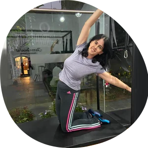
Ter um corpo que se movimenta livremente, sem restrições e sem dor, capaz de fazer tudo o que você precisa, é fundamental para todo ser humano.
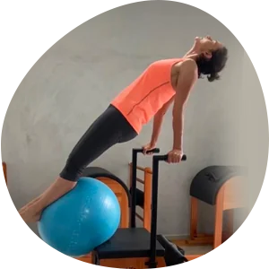
Força vai muito além da estética. Músculos fortes são fundamentais para não sobrecarregar as articulações e ter mais funcionalidade no dia a dia.
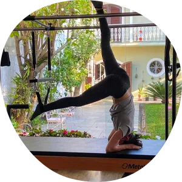
Nossos exercícios trabalham a musculatura mais interna do corpo, responsável pela estabilidade das articulações, evitando sobrecargas e lesões.
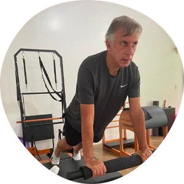
Com o corpo alinhado, alongado e fortalecido, você ganha liberdade de movimento e mais resistência para as atividades diárias e outras práticas físicas.
Conhecer o seu corpo e saber as melhores estratégias para ter uma postura correta e um corpo forte, livre de dores, é o caminho. O foco do nosso trabalho é orientar você a praticar uma atividade física que preserve seu corpo e suas articulações — beneficiando a sua saúde hoje e no futuro.
Comece agoraAdaptamos o método a cada corpo e a cada objetivo. Conheça as vantagens para cada público.
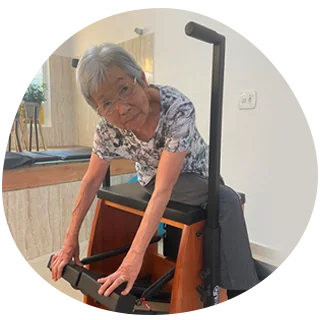
Exercícios para garantir autonomia nas atividades do dia a dia, com equilíbrio, mobilidade, força e independência.
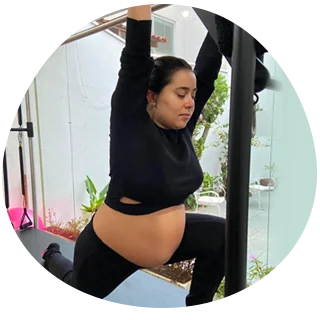
Cada fase da gestação recebe exercícios direcionados para evitar dores, manter o corpo forte e facilitar o parto.
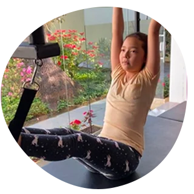
Corrigir posturas erradas e manter o corpo alinhado durante o crescimento previne lesões no futuro.
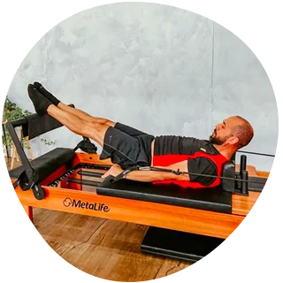
Correção do gesto esportivo, refinamento da performance e trabalho dos músculos profundos que outras práticas não alcançam.
Um ambiente limpo, arejado e equipado com o que há de melhor para o seu tratamento.
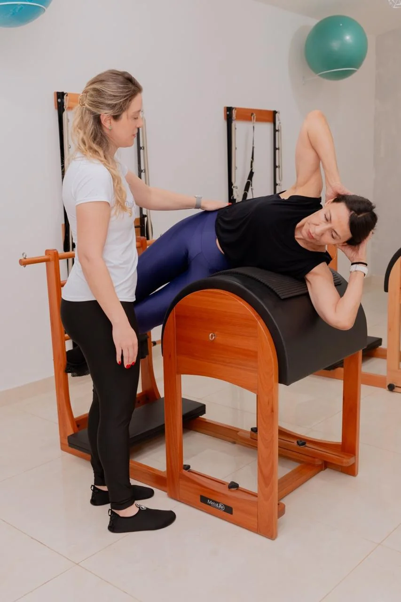
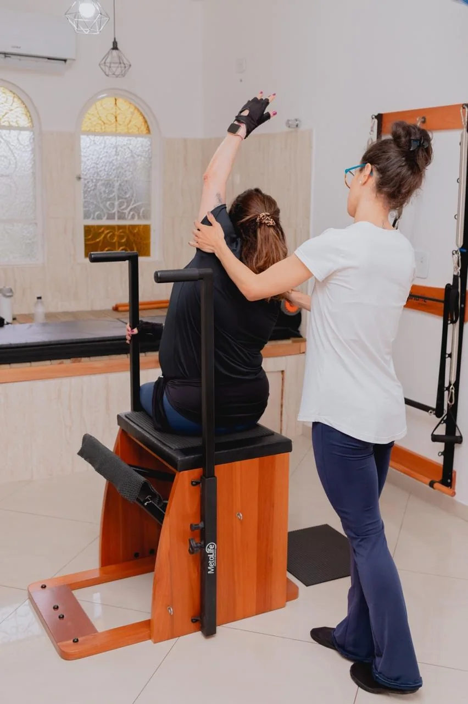
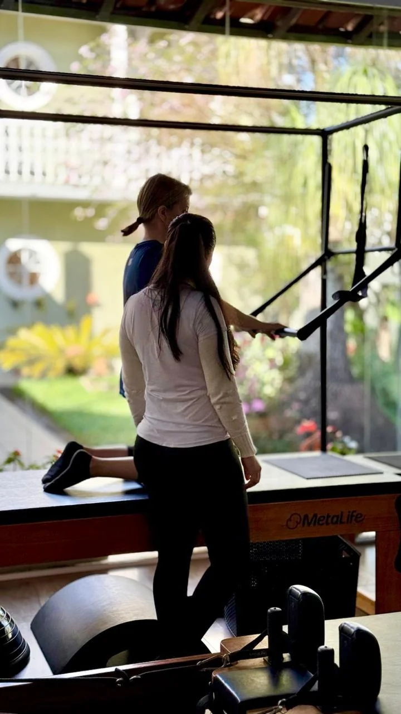
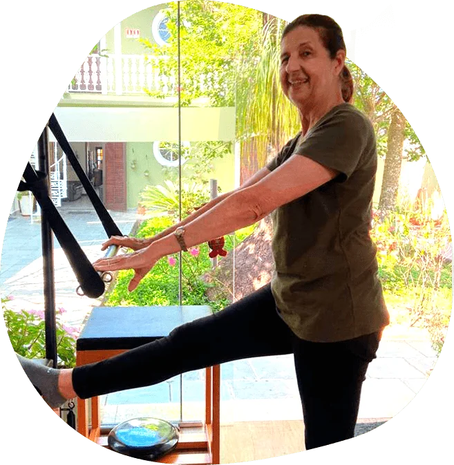
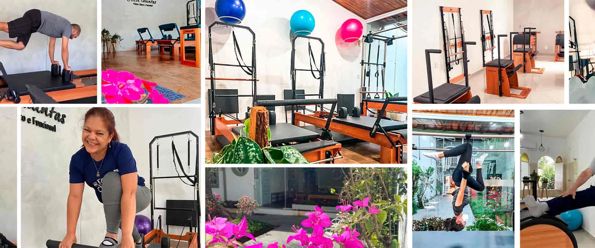
Quando comecei no Niwa Pilates me sentia travada e com fortes dores na lombar e hoje, após 6 meses, me sinto bem melhor, sem dor e com mais disposição. Tenho 76 anos. Devo muito à Jesse e sua equipe, que têm muita paciência e carinho com seus alunos.
Ana Elisa Anae
A Jesse é uma ótima instrutora de pilates. Muito atenciosa e cuidadosa. Faço pilates com ela há quase um ano e meio. Sempre sofri com dores na coluna, ombros e pescoço… e graças ao pilates essas dores diminuíram. Sou muito agradecida à Jesse e à equipe dela.
Michino Tani
O pilates me ajuda a executar as atividades cotidianas com mais facilidade e sem as dores na coluna que eu costumava ter. Recomendo: as profissionais, além de atenciosas, são extremamente capacitadas.
Maria do Carmo Martins de Lima
Ótimo studio! Fisioterapeutas competentes, atenciosas e sempre preocupadas com a nossa saúde. Muito bem montado, limpo e com equipamentos em ótimo estado. No início tinha dores no ombro direito; hoje, sem dores e confiante, após cada aula fica aquela sensação do dever cumprido!
Olga Edagi
São profissionais competentes que sabem o que fazem. Têm me ajudado muito nas dores articulares (artrose), na postura e no condicionamento físico. Tenho 70 anos, estou melhorando cada vez mais e recomendo a todos.
Marcos Maldonado
Melhor studio de pilates! Com toda certeza o acompanhamento das aulas fez a diferença durante toda a minha gestação. Studio lindo e organizado, com as melhores instrutoras.
Victoria Carolina Silva
Maravilhosa! É um lugar que eu amo estar! Mesmo nos dias em que estou cansada, quando estou lá é relaxante demais. Ambiente tranquilo, bonito e gostoso. Pessoas maravilhosas!
Pâmela Maximiano Ribeiro
Nós da equipe Niwa Pilates usamos o método como ferramenta de reabilitação e cura, num ambiente acolhedor e confortável. Ensinamos cada cliente a entender como o corpo funciona e a maneira certa de tratar o seu problema, independentemente do diagnóstico médico.
Formada em 2009 e atuando com o método pilates desde 2012, a fisioterapeuta Jesse Quintas inaugurou o Niwa Pilates em 5 de outubro de 2020. Essa proposta de atendimento é mantida por toda a sua equipe, que trabalha em busca do melhor atendimento e da satisfação de cada cliente.
Agendar uma aula experimentalPor ser uma atividade que visa a melhora da postura e do condicionamento físico, o pilates não possui contraindicações! A partir da avaliação clínica, mulheres, homens, adolescentes, idosos, atletas e pessoas com dores e restrições podem aproveitar seus benefícios.
O Pilates clínico envolve adaptações dos exercícios de acordo com as limitações e recomendações médicas para garantir o alívio da dor, ganhar mobilidade nas articulações, relaxar tensões musculares e fortalecer todo o corpo, ajudando a tratar a sua queixa.
Com certeza! Faremos uma avaliação do seu caso, explicamos o que está acontecendo com a sua coluna e como será o tratamento para resolvermos sua dor. Quanto mais você conhece sobre si, mais fácil fica de se curar. Não fazer exercícios específicos e direcionados é que é o problema.
Com certeza! Prevenir sempre será o melhor caminho. Você vai aprender sobre o seu corpo e a forma correta de se movimentar, evitando dores e lesões futuras. Comece o pilates antes de precisar do pilates!
Sim, porém a frequência e a regularidade são fundamentais para atingir os resultados esperados. Temos diversos alunos que fazem pilates conosco há mais de 10 anos.
Nossa primeira aula, na verdade, será uma aula-avaliação. Vamos nos conhecer melhor, você conhece o nosso espaço e apresenta suas questões. Entendemos e explicamos o seu caso para, assim, alinharmos as expectativas e os melhores exercícios para você.
Alterações posturais, falta de mobilidade, tensões musculares, dores na coluna, hérnias de disco, dores articulares, pré e pós-operatório de cirurgias ortopédicas, prevenção de dores e lesões, complemento a outras atividades físicas e para todos que desejam uma coluna saudável, um corpo forte e uma vida mais feliz!
Quanto mais você conhece o seu corpo, mais saúde você tem. Não se acostume a viver com dores que podem ser curadas — nós do Niwa Pilates podemos te ajudar nessa jornada.
Av. Laurinda Cardoso Mello Freire, 477 – Vila Oliveira
Mogi das Cruzes – SP, 08780-280